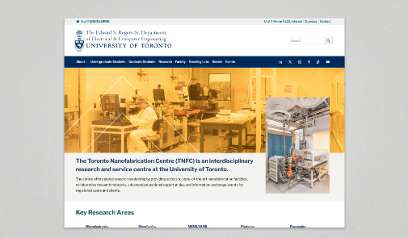
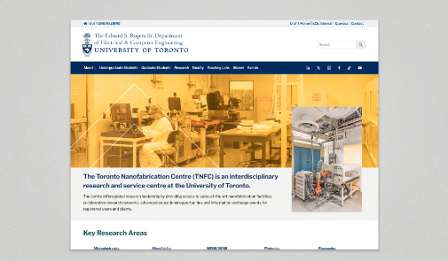

What I Do
I design clean interfaces and streamline workflows. When standard tools and traditional processes don’t meet the need, I build custom solutions, like creating a website to pitch a film with an immersive approach.
What I Use
How I Do It
Step 1
UX & Market Research + Ideate
I begin with understanding the goals, audience, and context. Through user interviews, competitive analysis, and business needs assessment, I gather insights that influence the direction. I also brainstorm multiple solutions, sketch ideas, and create early wireframes to explore possible designs.
Step 2
Wireframes & Prototypes
Once I have a clear direction, I develop high-fidelity mockups. I focus on creating detailed wireframes and interactive prototypes, using Figma to ensure both aesthetics and usability are balanced for a seamless user experience.
Step 3
Test, Iterate, Present
I conduct testing, gather feedback by presenting it to peers and stakeholders, and then refine the final design. I am flexible with stakeholder feedback, making sure the design aligns with business goals and user needs while keeping the experience intuitive and engaging.
Additional Step
Post-Design
If required, I can create content using Adobe Suite, Canva, and AI, and use front-end web development tools like Wix, WordPress, HTML, and CSS to maintain and update digital products.

 
